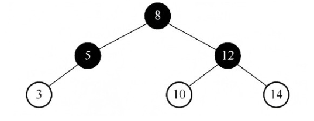
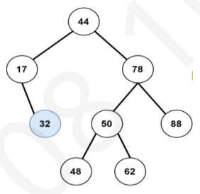
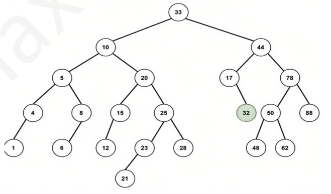
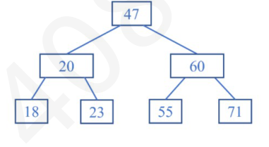
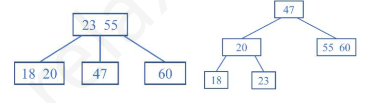
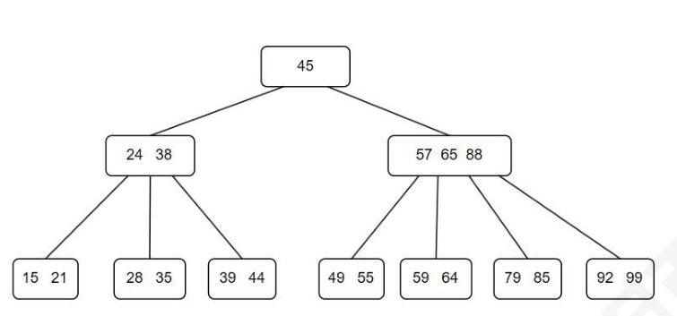

第 31 题
下列满足红黑树定义的是（ ）
答案与解析 答案：A
红黑树是一种特殊的二叉排序树，选项B 不满足二叉排序树的性质。选项C 中，结点2 的左右黑结点数不同。在选项D 中，结点3 的左右黑结点数不同。只有选项A 满足红黑树的定义。
教材第 42 页 第 32 题
在下图所示的红黑树中插入结点2 且染成红色后，则下一步应进行的操作是（ ）。

A． 左旋 B． 右旋 C． 变色 D． 无需调整 答案与解析 答案：B
插入结点2 旦将其染成红色后违反不红红原则，并且叔结点是黑色，应进行L 旋转，将结点3 右旋旋转到结点5 的位置，结点2 和结点5 分别成为结点3 的左、右孩子，然后将结点3 染成黑色，结点2 和结点5 染成红色。因此，下一步应进行右旋操作。
教材第 42 页 第 33 题
将关键字41，38，31，12，19，8 依次插入空的红黑树后，下列对结果的树说法错误的是 （）。
A． 有2 个红色结点，4 个黑色结点 B． 12 和41 的黑高都为0 C． 8 是12 的孩子 D． 树中存在相邻的黑色内部结点 答案与解析 答案：B
最后的红黑树的形态如下图所示，注意：黑高是指除了自身之外到叶子结点（失败结点）的黑色结点数，B 正确。
教材第 43 页 第 34 题
将关键字5,4,3,2,1 依次插入初始为空的红黑树T，则T 的最终形态是（ ）。
答案与解析 答案：D
关键字5, 4.3.2, 1 依次插入红黑树后的形态变化如下：
教材第 43 页 第 35 题
右图平衡二叉树，删除结点32，经过（ ）调整

A． LL B． LR C． RL D． RR 答案与解析 答案：C
AVL 的删除步骤如下： • 用BST 的删除结点方法删除当待删除节点的度为0时，表示待删除节点是叶节点，可以直接删除。当待删除节点的度为1即只有左子树或右子树时，将待删除节点替换为其子节点即可。当待删除节点的度为2即左右子树都存在时，我们无法直接删除它，而需要使用一个节点替换该节点。由于要保持二叉搜索树“左<根<右”的性质，因此这个节点可以是右子树的最小节点（在右子树的最左下位置）或左子树的最大节点(左子树的最右下位置)。最终转换成对叶子节点的删除。 •从删除结点一直往上回溯，寻找第一个失衡结点，找不到说明此时AVL 还是平衡的，到这里就结束了；否则标记它为node，其高度最高的儿子结点为child，高度最高的孙子结点为grandchild；(只有调整长得高的那部分子树才能重新恢复平衡) •对以node的最小不平衡子树进行调整，先观察node、child 哪一种；然后执行相应的旋转操作，将以node为根的子树调整平衡；grandchild的关系，判断是执行(LL/RR/LR/RL)中的 • 如果调整后由于子树高度-1 导致不平衡向上传导，则从第2 步继续执行调整操作，直至该树平衡；本题的删除过程如下，进行RL 调整。
教材第 43 页 第 36 题
下图平衡二叉树，删除结点32，要经历（ ）次旋转

A． 1 B． 2 C． 3 D． 4 答案与解析 答案：D
删除的规则如下： • 若删除的是非终端结点，则找到其前驱/后继关键字补到当前结点中，最终转换成删除终端结点 • 删除终端节点，自底向上找到第一个失衡的结点，接着看这个失衡结点的子树中，到所有叶子节点路径最长的那一条，确定这个路径的前两个结点是LL、RR、LR、RL 中的哪一种。比如这一题，删除32 后，第一个失衡的结点时44。44 子树中到叶子结点的最长路径经过的孩子孙子是78（R），60（L），所以是RL 调整，旋转两次。 • 第一次调整完后，继续往上找失衡的结点，进行调整，直到全部平衡。可以发现第二次失衡的是根结点33，进行LR 调整，左旋一次即可。综上所述，两次调整RL 和LR，旋转次数是4 次。
教材第 43 页 第 37 题
下列关于B 树的说法错误的是（ ）。
A． 高度为h 的m 阶B 树最多存储𝑚ℎ −1个关键字 B． 所有叶结点都在同一层次上 C． 含n 个结点（不含失败结点）的m 阶B 树至少包含𝑛−1×⌈𝑚/2⌉−1+ 1个关键字 D． 和二叉搜索树相同，B 树高度的增加也是发生在底部 答案与解析 答案：D
A 正确，当关键字最多的情况时，B 树是满m 叉树，每个结点都有m - 1个关键字。C 正确，除根结点外所有非失败结点至少⌈𝑚/2⌉−1 个关键字，根结点至少有1 个关键字。 D 错误，和二叉搜索树不同，二叉搜索树高度的增加发生在底部，而B 树的高度增加发生在顶部，只有根节点分裂才会导致高度加1。
教材第 43 页 第 38 题
下列数据结构中，从根结点到任意叶结点的路径都是有序的是（ ）。
A． AVL B． 二叉查找树 C． 红黑树 D． 堆 答案与解析 答案：D
AVL 和二叉查找树很类似，从根结点到叶子结点不一定有序，红黑树是一种二叉查找树，同理该路径不一定有序；堆符合这样的定义，应选D。
教材第 44 页 第 39 题
在一棵含有n 个关键字的m 阶B 树中进行查找，至多读盘（ ）次
A． 𝑙𝑜𝑔2𝑛 B． 1 + 𝑙𝑜𝑔2𝑛 C． 𝑙𝑜𝑔⌈𝑚/2⌉((𝑛+ 1)/2) + 1 D． 𝑙𝑜𝑔⌈𝑛/2⌉((𝑚+ 1)/2) + 1 答案与解析 答案：C
本题考查B 树的高度，磁盘存取次数取决于B 树的高度。对有n 个关键字的m阶B 树，让每个结点中的关键字个数达到最少，则容纳同样多关键字的B 树的高度达到最大。也就是说，第一层至少有1 个结点；第二层至少有2 个结点；除根结点外的每个非终端结点至少有 ⌈𝑚/2⌉棵子树，则第三层至少有2⌈𝑚/2⌉个结点.……第h+1层至少有2⌈𝑚/2⌉)ℎ−1 个结点，注意，第h+1层是不包含任何信息的叶结点。对关键字个数为n 的B 树，叶结点即查找不成功的结点为n+1，由此有n + 1⩾2(⌈𝑚/2⌉)ℎ−1 , ⩽log⌈𝑚/2⌉ ( (𝑛+ 1)/2) + 1 。
教材第 44 页 第 40 题
下列关于B 树的说法错误的是（ ） I．查找B 树的一个结点的前驱结点就是在找其左子树的最右结点II．B 树支持顺序查找III．B 树每次都需查询到叶结点，查询性能稳定IV．使用B 树进行范围查找时，需要依赖中序遍历
A． II,III B． III C． III,IV D． II,IV 答案与解析 答案：A
II 错误，B+树支持顺序查找，因为它的叶结点通过指针串联起来，而B树没有。III错误，(B+)树每次都需查询到叶结点，B 树查找到元素即可，不一定需要查找到叶结点处。
教材第 44 页 第 41 题
初始为空的3 阶B 树依次插入10，26，16，12，3，28，18，插入并调整结束后，根节点的关键字为（）
A． 10 B． 16 C． 10，16 D． 10，16，26 答案与解析 答案：B
插入规则： • 找到当前关键字的底层结点插入位置 •判断插入后是否超过单个结点的关键字上限（阶数-1）不超过，插入成功，结束。超过了则进行分裂，取中间结点放入父亲结点，若父亲结点关键字也溢出，则继续分裂。若到根节点还溢出，则生成新的根节点，B 树高度+1。本题插入过程如下图所示：
教材第 44 页 第 42 题
对于下面这棵3 阶B 树，完成删除71 的操作后应该是（ ）


A． B． C． D． 答案与解析 答案：C
左右兄弟都不够借，进行合并，若父节点在合并之后也小于最小关键字数，则父节点和兄弟合并，答案选C。
教材第 44 页 第 43 题
下图所示5 阶B 树，删除关键字24 后，再删除59，所得B 树的根节点是（ ）

A． 45 B． 57 C． 38，45，57，88 D． 45，64 答案与解析 答案：C
5 阶B 树，关键字的范围为[2, 4]，B 树删除的规则： • 若删除的是分支结点，则找到分支结点关键词的前驱或者后继关键词，转换成对终端节点的删除。 • 删除终端结点的关键字若删除后结点关键字没有下溢（不少于最小关键词个数），则直接结束。若删除后下溢，则需要向兄弟结点借，左右兄弟皆可。兄弟借了后没有下溢（兄弟够借），则直接借，兄弟借出的关键字放到父结点，父结点中的下放到删除关键字的位置。兄弟借了后下溢（兄弟不够借），则和兄弟合并，合并需要把父节点中的关键字和本身、兄弟的关键字合并到一个结点。若合并后，父亲结点也下溢，则继续找父亲结点的兄弟借，按上述步骤套娃，直到满足条件，或者直到根节点也被合并（B 树高度-1）。具体的删除过程如下图所示。
教材第 45 页 第 44 题
下面关于m 阶B+树的叙述，正确的是（ ） 𝑚
A． 每个结点内的关键字个数范围为⌈ 2 ⌉𝑚 B． 所有叶子结点（含关键字）的关键字个数和是n，那么非叶子结点关键字个数总和也为n C． 方便范围查找，也支持顺序查找 D． B+树查找时，不一定要查到最后一层。 答案与解析 答案：C
A 错误，根节点的范围下限是2。B 错误，B+树中删除仅在叶子结点进行，非叶子结点的关键字不删除，作为后续查找的“分解关键字”，所以非叶子结点关键字个数总和和叶子节点关键字总和不一定相等。 C 正确，B+树叶子结点之间通过指针链接成一个链表，且所有关键字均出现在叶子节点，所以支持顺序查找。而且更适合査找某个范围内的所有关键字。例如，在B+树上找出值在[a, b]内的所有关键字。处理方法如下：通过一次查找找出关键字a，不管它是否存在，都可以到达可能出现a 的叶子节点，然后在叶子节点中查找值等于a（如果有）或大于a 的那些关键字，对于所找到的每个关键字都有一个指针指向相应的记录，这些记录的关键字在所需要的范围。如果在当前节点中没有发现大于b 的关键字，就可以使用当前叶子节点的指向下一个结点的指针找到下一个叶子结点，并继续进行同样的处理，直至在某个叶子节点中找到大于b 的关键字，才停止查找。 D 错误，B+树一定要查找到最后一层，因为中间结点不保存关键字代表记录的指针，只有叶子结点才有。
教材第 45 页 第 45 题
下面关于B 树和B+树的叙述，不正确的结论是（ ）
A． B 树和B+树都能有效支持顺序查找 B． B 树和B+树都能有效支持随机查找 C． B 树和B+树都是平衡的多叉树 D． B 树和B+树都可用于文件索引结构 答案与解析 答案：A
B+树能够有效地支持顺序查找，因为它的叶子结点之间具有指针链接，可以顺序访问所有关键字。然而，B 树不能像B+树那样高效地支持顺序査找，因为关键字分布在整个树中，没有指针链接叶子结点，因此A 选项错误。在B 树中进行随机查找时，从根结点开始，根据查找的关键字，按照结点中关键字的大小关系，选择合适的子结点进行查找，直到找到对应的关键字或者查找失败。B+树在随机查找时的过程与B 树类似，从根结点开始，根据关键字的大小关系选择合适的子结点进行查找，直到找到对应的叶子结点。由于叶子结点形成了有序链表，可以更快地进行范围查询和顺序遍历操作。B 树和B+树都能有效地支持随机查找。由于它们都是平衡的多叉树，它们的查找性能在最坏情况下为O(logn)，因此B 选项正确。 B树和B+树都是平衡的多叉树，它们在插入和删除操作时会自动调整树的结构，确保树保持平衡，因此C 选项正确。 B 树和B+树都可以用作文件索引结构，它们可以有效地支持随机査找和范围查询，因此在数据库和文件系统中经常被用作索引结构，因此D 选项正确。
教材第 45 页 第 46 题
已知一棵5 阶B 树中共有53 个关键字，则树的最大高度为（ ），最小高度为（）。
A． 2 B． 3 C． 4 D． 5 答案与解析 答案：C
，B。【解析】5阶B树中共有53个关键字，由最大高度公式2+ 1 = 4 得最大高度4；由最小高度公式ℎ⩾log𝑚 𝑛+ 1≈2.5 得最小高度从而最𝐻⩽log⌈𝑚/2⌉𝑛+1小高度为3。
教材第 45 页 第 47 题
在7 阶B 树中搜索第2025 个关键字，若根结点已读入内存，则最多需启动（）次I/O。
A． 4 B． 5 C． 6 D． 7 答案与解析 答案：B
搜索第2025 个关键字并不代表只有2025 个关键字，所以需要每层放尽可能少的关键字，第一层1，第二层2 * 3，第三层2 * 4 * 3，第四层2 * 4^2 * 3，第五层2 * 4^3 * 3，...，以此累加，到第5 层最少需要511 个关键字，到第6 层最少需要2047 个关键字，因此第2025 个关键字最高在第6 层，根节点在内存，所以最多启动5 次，答案选B。提问：若问7 阶B 树只有2025 个关键字，根节点已经读入内存，读取任意关键字至多需要多少次I/O？答案：A。【解析】跟原题不同的是，本题确定了总的结点数，那么2025 个关键字B 树最高层高，根据B 树树高h 的计算公式：log𝑚 𝑛+ 1⩽ℎ⩽log⌈𝑚/2⌉ 2+ 1，计算得h=5(取整数)， 𝑛+1因为B 树的根结点已读入内存，所以最多需再启动4 次磁盘I/O。
教材第 45 页 第 48 题
具有n 个关键码的m 阶B 树的失败节点个数最多为（ ）
A． n+1 B． n-1B． C． n * m D． ⌈𝑚/2⌉∗𝑛 答案与解析 答案：A
n 个关键字的B 树必有n+1 个叶⼦结点（n个关键字将数域切分为n+1个区间），注意最多是迷惑条件。
教材第 45 页 第 49 题
设哈希地址空间为0~m-1，k 为记录的关键字，哈希函数采用除留余数法，即Hash(k)=k%p，为了减少发生冲突的频率，一般取p 为（ ）
A． m B． 小于或等于m 的最大质数 C． 大于m 的最小质数 D． 小于等于m 的最大合数 答案与解析 答案：B
在除留余数法中，p 应取小于存储区容量的质数，因此答案为B。为什么要选质数作为模长？比如，若p = 12，键值为24, 36, 48都会被映射到相同的桶（0），因为它们都被12整除。如果用质数作为模数，例如11，这些值会均匀地落在不同位置。为什么模长要小于或等于m？散列表的长度m 是桶的数量，最终散列值必须映射到[0, m-1]之间：如果你用p>m，那么得到的哈希值还需要再次取模m，多此一举。 • 如果你直接用p≤m的最大质数作为模长，就能直接映射到有效位置，效率更高。 •
教材第 45 页 第 50 题
哈希表采用线性探测法处理冲突，在查找某个关键词时，查找路径上的各个关键字（ ）
A． 一定是同义词 B． 一定不是同义词 C． 可能是同义词 D． 都相同 答案与解析 答案：C
同义词指的是在关键字不同，通过哈希函数映射到同一个值。而线性探测法处理冲突时，会把冲突的关键字按顺序往后放到空闲位置，可能导致不同同义词交叉排放，所以查找路径上的关键字可能是同义词。举例，比如哈希函数取key% 7，依次插入1，9，8三个元素，8放在下标为3的位置，查找8时，路径上依次是1，9，8。只有1，8(% 7 = 1)是同义词，9 不是同义词。因此答案选C。
教材第 45 页 第 51 题
下列关于哈希表的说法错误的是（ ）
A． 除留余数法是所有哈希函数中最好的。 B． 采用链地址法解决冲突时，不存在聚集现象。 C． 在哈希表查找中，比较操作一般也是不可避免的。 D． 若散列表的装填因子a<1，仍可能产生冲突 答案与解析 答案：A
对于A，不存在特别好与坏的哈希函数，哈希函数计算不能过于复杂，同时还要兼顾减少冲突，因此选取怎样的哈希函数和哈希表中的记录关键字的特点相关。对于B，聚集现象是非同义词发生的地址冲突，在链地址法的哈希表中，只有同义词才会发生地址冲突。对于C，理想状态哈希表的查找应该不需要关键字之间的比较，而是由关键字通过哈希函数定址即可，但是由于冲突的不可避免性，在查找中也就需要通过比较来甄别冲突的情况。对于D，a<1 只能说明哈希表的长度大于存储的记录个数，但存储的记录完全有可能发生冲突，冲突与否取决于两个关键字经过哈希函数运算后的值（即哈希地址），是否相同。
教材第 46 页 第 52 题
哈希函数为H(key)=key MOD11，表中已存入关键字分别为7、14，37、60 和83 的五个记录，此时哈希表的装填因子a=0.33。用二次探测再散列法解决冲突，则再放入关键字为49 的记录时，它的位置下标是（）
A． 5 B． 8 C． 9 D． 1 答案与解析 答案：C
表中记录个数为n=5 时，装填因子为a=0.33，则哈希表长为𝑚= 𝑛／𝑎= 5/0.33 ≈15，在放入关键字为49 的记录之前哈希表HT［0..14］，发生冲突，然后按照𝑑+ 12 , 𝑑− 12 , 𝑑+ 22 , 𝑑−22. . .进行探查。关键字49 的哈希地址为49 MOD 11=5，第一次探测与60 冲突。根据二次探测再散列的方法，第2 次探测地址为5 + 12 = 6，又与83 冲突；第3 次探测地址为5－12 = 4，又与37 冲突；第4 次探测地址为5 + 22 = 9，没有冲突发生，因此它的存放位置是9。
教材第 46 页 第 53 题
已知关键字序列{2, 52, 66, 30, 41, 21, 19, 6, 10, 16, 101, 1}，Hash 函数为key%11，表长为12，冲突解决方法为拉链法，请问该表的查找失败的ASL 为（ ）
A． 22/11 B． 23/11 C． 23/12 D． 22/12 答案与解析 答案：B
依次取余后序列为{2, 8, 0, 8, 8, 10, 8, 6, 10, 5, 2, 1}，H（key）=0 ~ 10，查找失败对应的地址有11 个，每次查找对应链的时候，查到空结点为止，故0~10 的查找失败次数和为2+2+3+1+1+2+2+1+5+1+3=23，故答案选B。注意：有的书上空指针不算一次比较，这个也是合理的，应当在算/不算都计算一遍结果，如果发现有答案和自己结果对上，就果断选，一般的题目答案中不会同时包含两种方式的结果的。
教材第 46 页 第 54 题
将关键字序列(34，69，9，56，24，44) 散列存储到散列表中，散列表的是一个一维数组A[0....8 ]，散列函数𝐻𝑘𝑒𝑦= 𝑘𝑒𝑦𝑚𝑜𝑑7，采用线性探测法解决冲突，现删除24，插入关键字51，则51 在散列表中的下标为（），查找失败的平均查找长度ASL 为（ ）
A． 3，16/7 B． 5，20/7 C． 3，19/9 D． 5，31/9 答案与解析 答案：A
34%7=6，69%7=6，9%7=2，56%7=0，24%7=3，44%7=2。初始如下： 2+1+4+3+2+1+316删除24，再插入51（%7=2），发生冲突后，插入下标为3 的位置。𝐴𝑆𝐿失败 = = 77
教材第 46 页 第 55 题
下列关于散列冲突的说法中，正确的是（ ）。
A． 再散列在处理冲突时不会产生“堆积”现象 B． 在哈希表中进行查找是不需要进行关键字比较的 C． 散列函数选的好可以减少冲突现象 D． 采用线性探测法处理冲突时，所有同义词在散列表中一定相邻 答案与解析 答案：C
再散列在处理冲突时依然会产生“堆积”现象，A 错误。在哈希表中进行查找依然需要进行关键字比较，B 错误。采用线性探测法处理冲突时，所有同义词在散列表中不一定相邻，D 错误。
教材第 46 页 第 56 题
下述有关hash 冲突时候的解决方法的说法，错误的是（ ）
A． 通常有两类方法处理冲突：开放定址（OpenAddressing）法和拉链（Chaining）法 B． 开放定址更适合于造表前无法确定表长的情况 C． 在用拉链法构造的散列表中，删除结点的操作易于实现 D． 拉链法的缺点是：指针需要额外的空间，故当结点规模较小时，开放定址法较为节省空间 答案与解析 答案：B
拉链法的节点空间动态申请更适合无法确定表长的情况。
教材第 46 页 第 57 题
下面关于散列查找的说法，不正确的是（ ）
A． 采用链地址法处理冲突时，查找任何一个元素的时间都相同 B． 采用链地址法处理冲突时，若规定插入总是在链首，则插入任一个元素的时间是相同的 C． 用链地址法处理冲突，不会引起二次聚集现象 D． 用链地址法处理冲突，适合表长不确定的情况 答案与解析 答案：A
A 错误，链地址法处理冲突，需要遍历链表，查找的时间不一定相同。
教材第 46 页 第 58 题
假定有k 个关键字互为同义词，若用线性探测法把这k 个关键字存入足够长的散列表中，至少要进行（）次探测。
A． k - 1 B． k C． k(k - 1) / 2 D． k(k + 1) / 2 答案与解析 答案：C
线性探测是解决冲突的策略。第一个关键字最好情况是没有发生冲突，至少探测0 次，第2 个关键字至少要探测1 次，第3 个关键字至少要探测2 次，第4 个关键字至少要探测3 次，……，第k 个关键字至少要探测k-1 次，至少共需进行k(k - 1) / 2 次探测。
教材第 46 页 第 59 题
如果要求一个线性表既能较快地查找，又能适应动态变化的要求，最好采用（ ）查找法。
A． 顺序查找 B． 折半查找 C． 分块查找 D． 哈希查找 答案与解析 答案：C
顺序查找和折半查找都不适合动态变化。哈希查找插入的时间复杂度取决于冲突处理函数，最坏是O(n)。分块查找的优点是：在表中插入和删除数据元素时，只要找到该元素对应的块，就可以在该块内进行插入和删除运算。由于块内是无序的，故插入和删除比较容易，无须进行大量移动。如果线性表既经常动态变化，又需对其进行快速查找，则可采用分块查找。其缺点是：要增加一个索引表的存储空间并对初始索引表进行排序运算。因此此题选C。
教材第 47 页 第 60 题
散列表查找过程和给定值进行比较的关键字个数取决于（ ）
A． 散列函数 B． 处理冲突的方法 C． 装填因子 D． 以上全部 答案与解析 答案：D
散列函数和处理冲突的方法决定了值的映射地址和进行冲突探测后插入的位置，散列函数的好坏首先影响出现冲突的频繁程度，若是均匀的散列函数（对同一组随机的关键字，产生冲突的可能性相同），则平均查找长度只有处理冲突的方法和装填因子。装填因子𝛼= 表中填入的记录数 ，𝛼越小，发生冲突的可能性就越小；反之越大。所以答案选D。散列表的长度 【答案速对】 DACBBBDACABBCDABBDBDBACBADBCCBACACCCDABBAAADADDCBBDC(DC)C(DA)CCDABBDBADDABBB
教材第 47 页